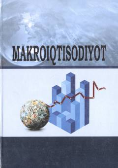

MMakroiqtisodiyot fanidan bakalavriat talabalari uchun mo'ljallangan o'quv qo'llanma.
Ushbu o'quv qo'llanma bakalavriat talabalari uchun makroiqtisodiy ko'rsatkichlarni tahlil qilish, davlat siyosati va strategiyasini asoslash ko'nikmalarini shakllantirishga qaratilgan. Kitobda makroiqtisodiyotning asosiy nazariy masalalari va ularning amaliyotda qo'llanilishi, xususan, O'zbekiston iqtisodiyoti misolida yoritilgan.